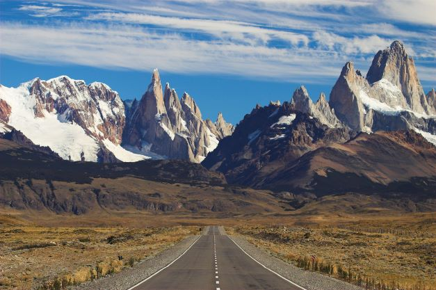
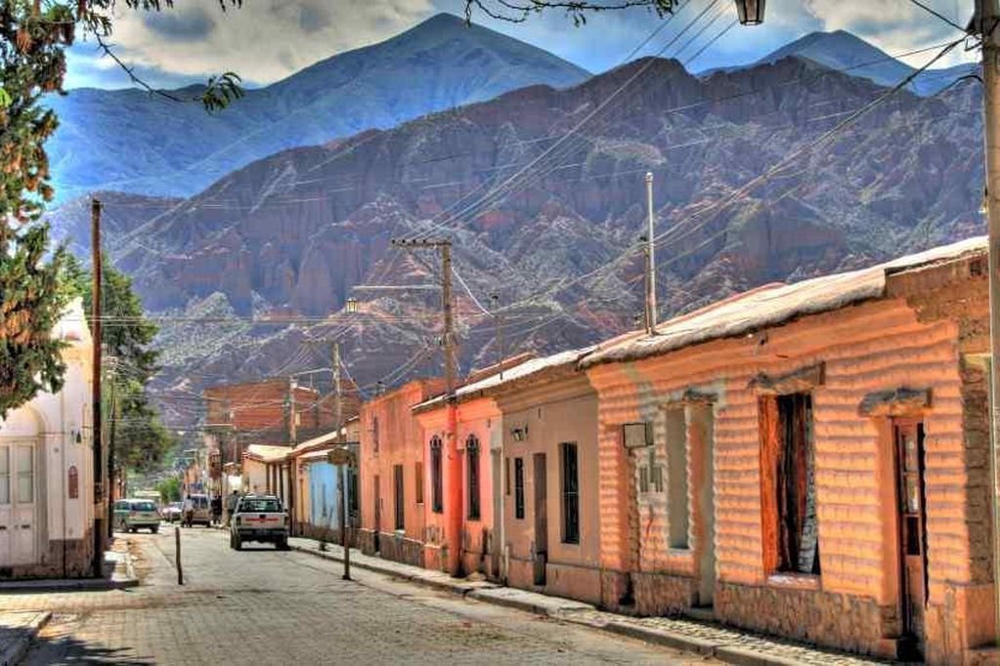
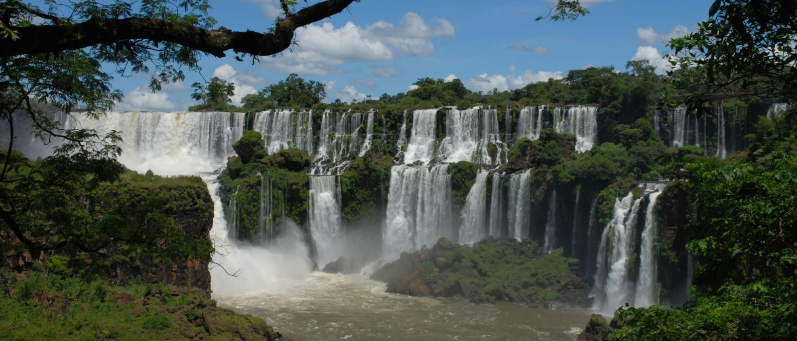

La mítica Patagonia atesora escenarios naturales increíbles. Se ubica en el sur del territorio argentino y la conforman las provincias de La Pampa, Neuquén, Río Negro, La Pampa, Chubut, Santa Cruz y Tierra del Fuego, Antártida e Islas del Atlántico Sur. Entre sus bellezas paisajísticas y grandes atractivos se destacan cinco sitios del Patrimonio Mundial (UNESCO): el Parque Nacional Los Glaciares, La Cueva de las Manos, el Parque Nacional Los Alerces y Península Valdés. Por un lado, el cordón de la Cordillera de los Andes, se impone de norte a sur como uno de sus límites naturales y abre escenarios impactantes. Cumbres de volcanes con géiseres y aguas termales; montañas de donde descienden enormes glaciares, lagos y ríos. Encantadores valles y aldeas de montaña rodeadas de bosques autóctonos milenarios, o extensos campos de estepa. Patagonia también sorprende con su biodiversidad y su fauna silvestre no menos increíble. Desde maras, ñandúes, guanacos y el ciervo colorado hasta el cóndor sobrevolando desde los andes a las sierras junto al mar. También es hábitat de un rico mundo marino, donde numerosas especies forman colonias de lobos y elefantes marinos, pingüinos magallánicos, delfines, toninas, y otras que arriban por temporada donde se destaca la Ballena Franca Austral (Monumento Natural). Su gastronomía, te ofrece platos y sabores tan bien definidos que merecen una mención. Entre ellos, regionales a base del cordero patagónico, o carnes típicas de ciervo, chivo, truchas y otras delicias que pueden combinarse a la perfección con vinos de origen patagónico. Imperdibles son las picaditas de ahumados con cervezas artesanales y todos una tentación para los chocolates y dulces.
Esta región de Argentina la integran seis provincias ubicadas en el noroeste del territorio: Jujuy, Salta, La Rioja, Catamarca, Santiago del Estero y Tucumán. Es ante todo, una geografía de notables contrastes, extraordinaria belleza paisajística y riqueza cultural. La aridez de la Puna; la exuberante selva de las Yungas; planicies santiagueñas casi a nivel del mar, y los más de 6.800 metros de la Cordillera de los Andes. Allí donde la tierra muestra sus capas geológicas en Talpampaya, poniendo al descubierto secreteos milenarios, y donde cada paisaje norteño enmarca antiguas ruinas, fortalezas del período incaico, capillas coloniales, catedrales y basílicas. Los colores de la Quebrada, los Valles Calchaquíes, el Tren a las Nubes, los salares, las termas, el folclore, los platos típicos y el vino Torrontés de altura, son tan sólo algunas de las diversas opciones que vas a poder disfrutar en el noroeste argentino. El legado de pueblos originarios y precolombinos; o sus importantes hallazgos arqueológicos y paleontológicos son atractivos de gran interés para conocer. Los pueblos de la Quebrada de Humahuaca y de los Valles Calchaquíes, el Camino del Inca y el Camino Real, lugares históricos, ciudadelas y pucarás son algunas de las posibilidades para adentrarse a la cultura norteña. Los colores de los cerros se expresan en cada pieza original, ponchos y tejidos que podés encontrar en sus rutas de artesanos. El folklore se transmite de generación en generación, y podés escuchar zambas y chacareras en peñas y festivales. Los carnavales, las fiestas de la Pachamama, el Inti Raymi y los misachicos, te invitan a festejar con las comunidades locales en lo más íntimo de sus tradiciones.
La región del Litoral abarca a seis provincias del noreste argentino, las que atesoran lugares que impactan por su fascinante belleza natural y son un gran atractivo turístico internacional. Pero también, muchos de ellos son de suma importancia para el planeta y el desarrollo en equilibrio del ecosistema. Misiones es escenario de selvas tropicales, tierras rojas y fabulosos saltos de agua que integran el Parque Nacional Iguazú. Su riqueza y valor excepcional hacen de este sitio un recurso natural valorado como Patrimonio Mundial por la Unesco. Asimismo, atrae la atención turística internacional por la belleza excepcional de Las Cataratas del Iguazú, consideradas una de las Siete Maravillas del planeta. En la provincia de Misiones también confluye otro valuarte mundial, las Ruinas Jesuítico-Guaraníes, Patrimonio Histórico Cultural de la Humanidad. Corrientes es poseedora de una riqueza formidable en los Esteros del Iberá, que se constituyen en el segundo humedal más importante de sudamérica. El llamado “pantanal argentino” sorprende por la biodiversidad de flora y fauna, hábitat de especies como yacaré overo, el ciervo de los pantanos, y centenar de especies de aves. Chaco donde El Impenetrable es uno de los tesoros más impactantes de su geografía, hábitat de especies como el oso hormiguero, el tapir, entre otras, que hacen de este Parque Nacional un lugar de referencia ecoturística a nivel internacional.
Llegar a Buenos Aires, es abrir la puerta para conocer y enamorarte de una de las capitales más grandes y cosmopolitas de Sudamérica: la Ciudad Autónoma de Buenos Aires. Con el Obelisco como uno de sus principales íconos, la ciudad tiene múltiples opciones y espacios para recorrer: modernas avenidas a bellos parques y espacios verdes; edificios y monumentos del patrimonio histórico nacional (Plaza de Mayo, La Casa Rosada, el Cabildo, el Congreso Nacional, el Teatro Colón, entre otros). Pero bien vale la pena adentrarse en el corazón porteño para sentir su más pasional tradición: el tango. San Telmo, La Boca y Caminito, son unos de esos sitios imperdibles. O bien recorrer aquellos que marcan tendencia: Palermo, Recoleta y Puerto Madero. Como principal centro económico y social del país, la ciudad vive siempre activa. Concentra todo tipo de actividades (negocios, reuniones, convenciones) y congrega a multitudes como sede de grandes eventos culturales y deportivos. A pocos minutos (60 km por autopista) llegás a La Plata, capital de la provincia de Buenos Aires y conocida como “la ciudad de las diagonales” por su singular trazado urbano donde se destaca la Catedral neogótica, el Museo de Ciencias Naturales, entre otros paseos ideales para visitar en familia. La Plata también es lugar de residencia para muchos jóvenes que provienen de todo el país atraídos por su variada vida universitaria. La costa atlántica tiene más de 1.200 kilómetros de playa, donde miles de argentinos y turistas descansan y disfrutan de sus vacaciones de verano. Mar del Plata es la ciudad cabecera de todos los balnearios del país, además de ser destino del turismo de reuniones. Están las playas más familiares y tradicionales como Necochea, Monte Hermoso, Villa Gesell, Miramar y los del Partido de la Costa; y otras más modernos y exclusivas como las de Pinamar y Cariló.